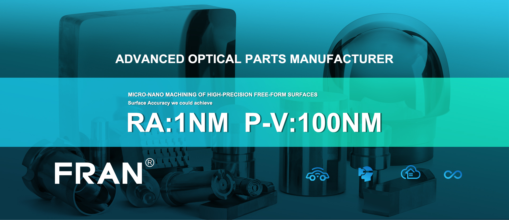
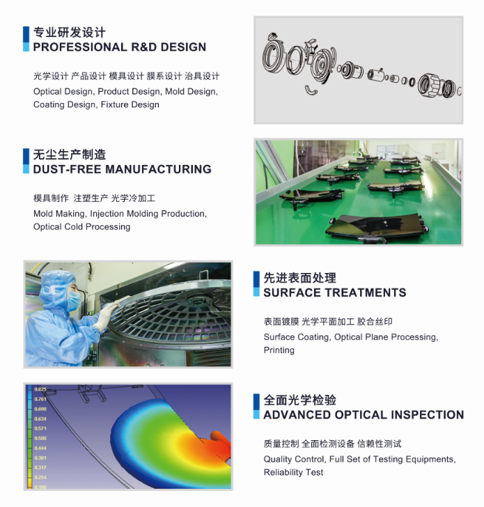
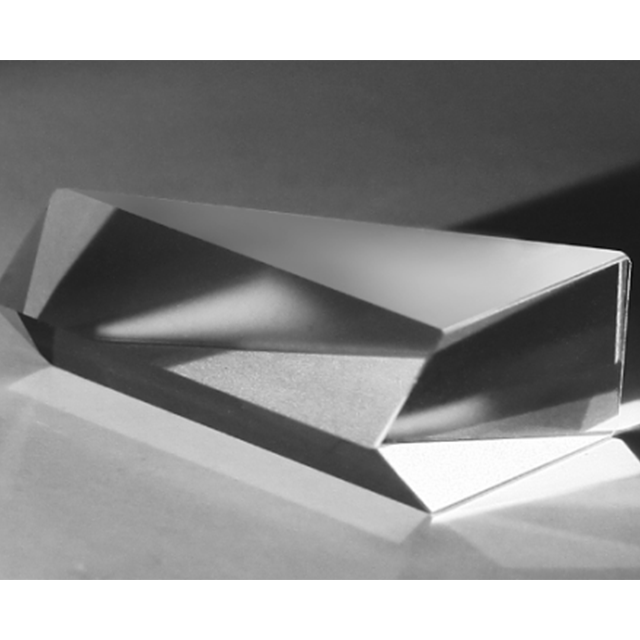

Drawing review, tolerance assessment and material/coating alignment with application targets.

Manufacturing Capabilities
Engineering-Led Manufacturing for Precision Optics
Capability integration is designed to reduce handoff risks between design, process setup, production and quality release.
Delivery model
Prototype, pilot and mass-production support in one route, with project reviews at each transition stage.
Workflow
From requirement capture to outgoing quality release
A structured process reduces uncertainty in precision optics projects and improves consistency across batches.
Manufacturing route definition, fixture concept, risk points and inspection strategy setup.
Sample production with measured feedback loops for geometry, surface and optical parameters.
Pilot-to-mass transition using documented checkpoints and parameter control windows.
Final outgoing checks, reporting package and post-delivery technical support.
DFM + Tolerance Alignment
- Optical/mechanical interface checks
- Tolerance sensitivity review
- Material and coating feasibility suggestions
Precision Manufacturing
- Micro-nano machining pathways
- Precision forming and polishing operations
- Assembly and packaging options
Integrated Quality Control
- Incoming + in-process + final checks
- Optical and dimensional report output
- Corrective action and traceability loops

Quality System
Practical quality architecture for B2B manufacturing
| Quality Stage | Control Focus | Output |
|---|---|---|
| Incoming | Material and supplier conformity | Release / hold decision |
| In-process | Dimension, surface and process stability | Checkpoint records |
| Final | Appearance, performance and packaging | Outgoing inspection report |
| Post-delivery | Issue tracking and corrective actions | Continuous improvement feedback |
For projects with strict validation requirements, reporting structure can be aligned with customer-side documentation standards.
Capability Snapshot
What engineering teams usually evaluate first
- Can the design be manufactured repeatedly at scale?
- How are optical and dimensional tolerances controlled?
- What quality records are available per delivery lot?
- How fast can prototype issues be fed back into process updates?
